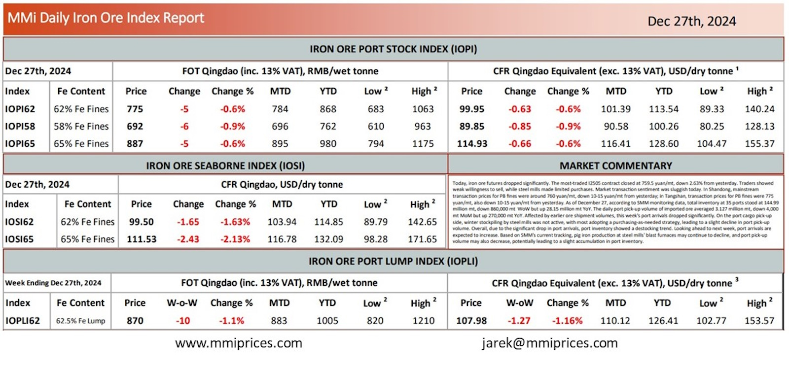

Today, iron ore futures dropped significantly. The most-traded I2505 contract closed at 759.5 yuan/mt, down 2.63% from yesterday.Traders showed weak willingness to sell, while steel mills made limited purchases. Market transaction sentiment was sluggish today. In Shandong, mainstream transaction prices for PB fines were around 760 yuan/mt, down 10-15 yuan/mt from yesterday; in Tangshan, transaction prices for PB fines were 775 yuan/mt, also down 10-15 yuan/mt from yesterday. As of December 27, according to SMM monitoring data, total inventory at 35 ports stood at 144.99 million mt, down 860,000 mt WoW but up 28.15 million mt YoY. The daily port pick-up volume of imported ore averaged 3.127 million mt, down 4,000 mt MoM but up 270,000 mt YoY. Affected by earlier ore shipment volumes, this week’s port arrivals dropped significantly. On the port cargo pick-up side, winter stockpiling by steel mills was not active, with most adopting a purchasing-as-needed strategy, leading to a slight decline in port pick-up volume. Overall, due to the significant drop in port arrivals, port inventory showed a destocking trend. Looking ahead to next week, port arrivals are expected to increase. Based on SMM’s current tracking, pig iron production at steel mills’ blast furnaces may continue to decline, and port pick-up volume may also decrease, potentially leading to a slight accumulation in port inventory.

Download PDFSource: Metals Market Index (MMI)